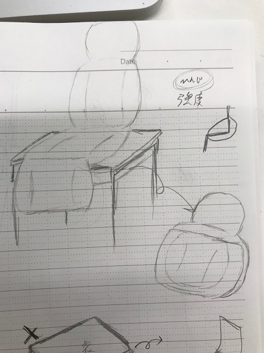

3DCAD[Fusion360]でコンセプトをモチーフにしたものを作った

僕はFusion360を使うことを諦めて手で書くことにしました。
描いたのはどこでも置いたら背もたれのある椅子として使える椅子です。
コンセプトは小さい子供も見えるようにどこでも座れる椅子があればいいなというところから来ているのですが。
後からこの方法以外でも解決できるのではという考えが出てきました。
Fusion360は今では他にもモノの長さを知りたいときにCAD内で作って大きさなどを出したり利用しています。
戻る